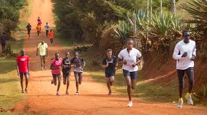

Naaman Kipkirui Sang was born on 29th December 2002 in litein town,Kericho County, in Kenya.
Just like many other village children,I grew up knowing that rice and chapati was only ment for Christmass days.Ugali and Skuma Wiki was our daily meal which we cherished scince it was the only food we could acces
I spent most of my free time participating playing football and mostly running .
Growing up, running for me was functional. Schoolchildren in Kenya often run long distances without thinking anything about it, I would run to school and back every day, also repeating the journey at lunch.I always had that someday i would become a well known atlethe just like Eluid Kipchoge , Ezekiel kemboi and many others.This was a dream which i kept in my mind not knowing that someday i would spent hours sitting on my computer rather than running in the hills of Nandi county as i always dreamt
But in 2011 at the age of 13 my changed forever when i was in school .That was when i first touched a Copmuter.Playing a computer game seemed stupid but little did i know that it would change a whole part of my career .I got intrested in Coputers from that momement.I promised myself that someday i make a game and also entice someone into the tech world as I was.